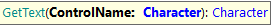

Getting the visible text from controls is very useful for several purposes.
Typically is used combined with assertions to let GXtest check for expected conditions. Another common usage is to retrieve web panel data that needs to be used in other test case steps.

Gets the text of a control
Parameters
Example
&driver.GetText("ControlLabel")
&driver.GetText("webComponent1.control1")
Gets the text of a control
Parameters
Example
&driver.GetText("ControlLabel", 3)
&driver.GetText("webComponent1.control1", 1)
Gets the text from an HTML element using its ID.
Returns: The text of the selected element.
Parameters:
Example of use:
&txt1 = &driver.GetTextById("CountryName")
Gets the text from an HTML element using its 'name' attribute.
Returns: The text of the selected element.
Parameters:
Example of use:
&txt1 = &driver.GetTextByName("CustomerName")
Gets the text from an HTML element using a CSS selector.
Returns: The text of the selected element.
Parameters:
Example of use:
&txt1 = &driver.GetTextByCSS("label.gx-label.col-sm-3.AttributeLabel.control-label")
Gets the text from an HTML element using an XPath selector.
Returns: The text of the selected element.
Parameters:
Example of use:
&txt1 = &driver.GetTextByXPath("//label")
| Backlinks | |
| GXtest UI Commands - Assertions | GXtest UI Commands - Get Text (GeneXus 17 upgrade 0) |
| GXtest UI Test for Web - Supported Commands | |
| Toc:GXtest v4 |